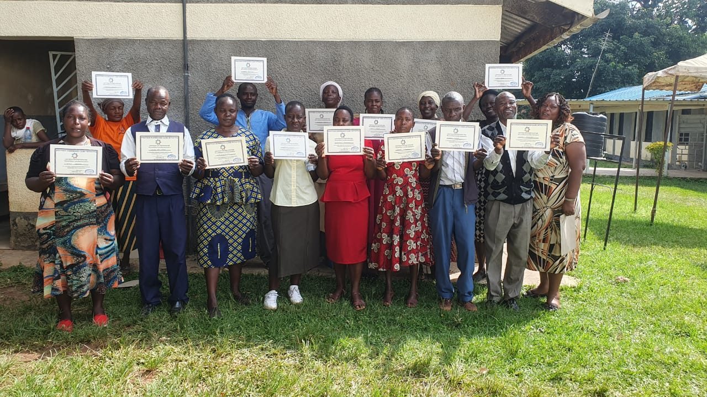
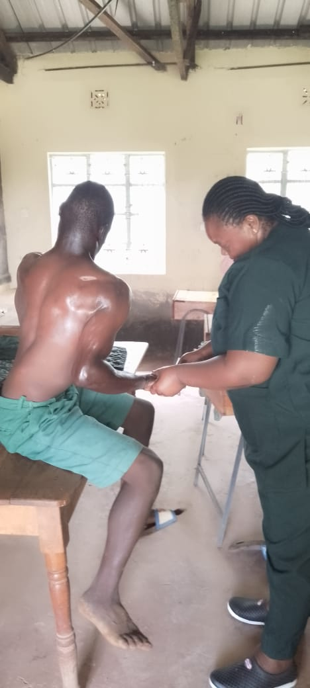

our blogs
our daily stories

education
Access to education is a fundamental right, yet many children in our communities face barriers such as lack of school fees, materials, or transportation. Through your generous donations, we’ve provided scholarships, school supplies, and after-school tutoring programs. As a result, more children are now attending school, excelling in their studies, and building brighter futures.
read more
Food
Food insecurity remains a pressing issue for many families. Thanks to your contributions, we’ve distributed food packages containing essentials like grains, vegetables, and cooking oil to hundreds of households. These donations not only provide nourishment but also restore dignity to families struggling to make ends meet.
read more

Health
Access to healthcare can mean the difference between life and death. Through your support, we’ve facilitated medical care, provided essential medications, and conducted community health outreach programs. These efforts have improved the health of countless individuals and strengthened our community’s ability to thrive.
read more